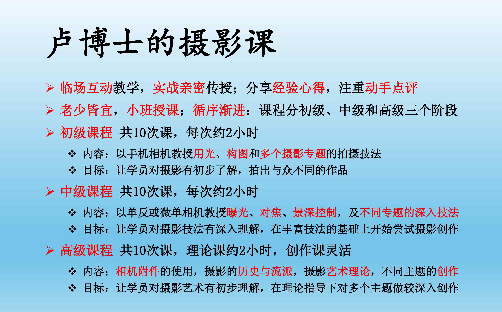
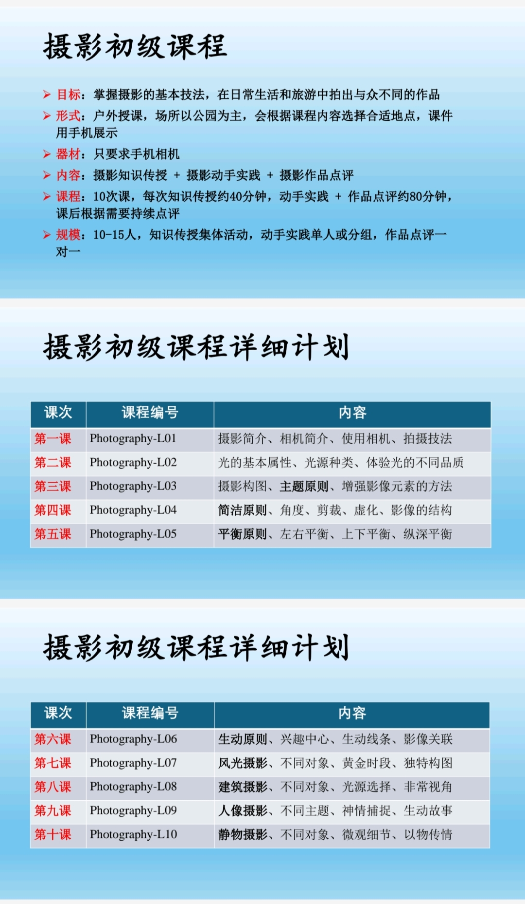
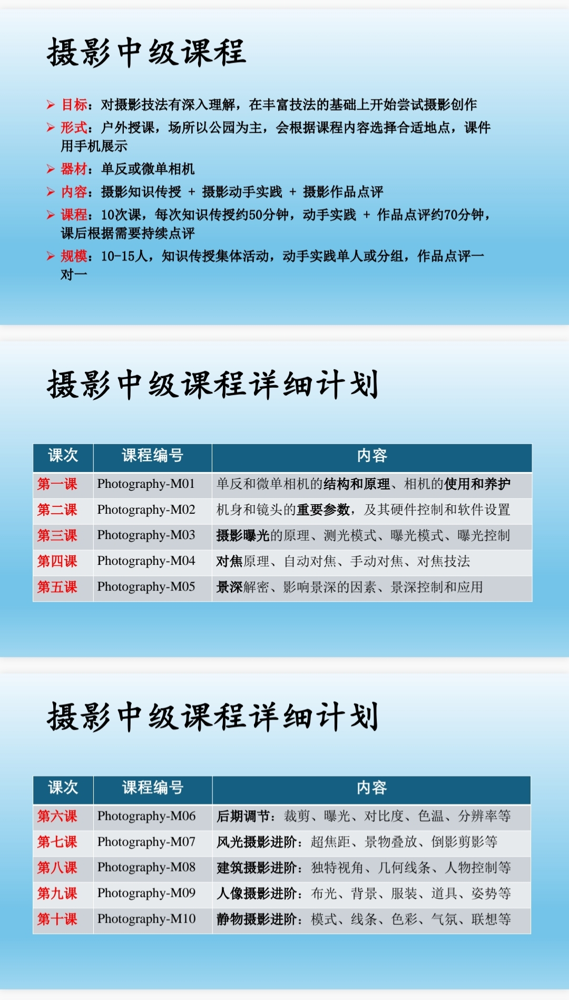

摄影课程
我们的摄影课程开始于2025年。在短短的时间里，我们已取得了可观的成绩。学员们的摄影技艺普遍有了大幅提升。在此基础上，我们举办了四场线上影展。
李鲲鹏同学表现突出，他今年以优异成绩入选《联合早报》学生摄影记者团队。他现在已被推荐加入美国摄影学会，开始了摄影旅程的新阶段。
近期课程
2026年下半年，我们继续摄影中级课程。
第一节课 7月11日下午5-7时，裕华园和日本园



摄影高级课程将在时机成熟时开设。
我们的摄影课程开始于2025年。在短短的时间里，我们已取得了可观的成绩。学员们的摄影技艺普遍有了大幅提升。在此基础上，我们举办了四场线上影展。
李鲲鹏同学表现突出，他今年以优异成绩入选《联合早报》学生摄影记者团队。他现在已被推荐加入美国摄影学会，开始了摄影旅程的新阶段。
2026年下半年，我们继续摄影中级课程。
第一节课 7月11日下午5-7时，裕华园和日本园



摄影高级课程将在时机成熟时开设。